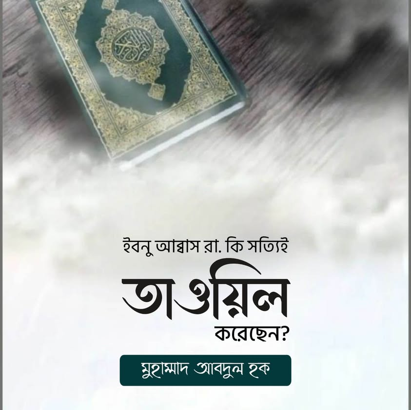

ইবনু আব্বাস রা. কি সত্যিই তাওয়িল করেছেন?
১৮ জুন, ২০২৩
ইবনু আব্বাস রা. কি সত্যিই তাওয়িল করেছেন?
(পর্ব-২)
কালামি ভাইদের দাবি রায়িসুল মুফাসসিরিন ইবনু আব্বাস রা. মহান আল্লাহর অনেক সিফাতে তাওয়িল করেছেন?
এরকম ভুয়া কিছু দাবির ব্যবচ্ছেদ আগেও করেছি। আজ তাদের নতুন এক দলিলের খণ্ডন করব আমরা, ইনশাআল্লাহ। তাদের দলিল—
//
ইবনে আব্বাস (রা.) তাবীল করেছেন।
روى أبو صالح عن ابن عباس في قوله تعالى: ثم استوى إلى السماء یعنی صعد أمره إلى السماء
আবু সালেহ ইবনে আব্বাস থেকে বর্ণনা করেন, আল্লাহ আকাশের দিক ইস্তিওয়া করেছেন এর অর্থ হলো, তাঁর আদেশ আকাশের দিকে উঠেছে। (তাফসীরে কুরতুবী, নিচে স্ক্রীনশুট নং -২ দেখুন) ইবনে আব্বাস (রাঃ) এখানে আল্লাহ আরশের দিকে ইস্তিওয়া করেছেন এর তাবীল করেছেন, তার আদেশ আরশের দিকে উঠেছে। ইবনে আব্বাস রাঃ এখানে হাকিকত বর্জন করে তাবীল করেছেন এবং ইস্তিওয়া সিফাত নাকচ করেছেন।
//
জবাব—
উক্ত বর্ণনায় রাবি আবু সালেহ মুহাদ্দিসগনের নিকট সমালোচিত। (জমহুর মুহাদ্দিস তাকে দুর্বল আখ্যা দিয়েছেন। কেউ কেউ অবশ্য সিকাহ বলেছেন। আবার কেউ কাজ্জাবও বলেছেন।)
তার ব্যাপারে সমালোচনার একাংশ—
أبو أحمد الحاكم : ليس بالقوي عندهم، ومرة: ضعفه
أبو أحمد بن عدي الجرجاني : له تفسير زخرف في ما لم يتابعه أهل التفسير عليه ولم أعلم أحدا من المتقدمين رضيه، ومرة: ضعفه
أبو الفتح الأزدي : كذاب
أبو بكر البيهقي : متروك عند أهل العلم بالحديث لا يحتجون بشيء من رواياته لكثرة المناكير فيها، وظهور الكذب منه في رواياته، وقال في معرفة السنن والآثار: لا يحتج به
أبو جعفر العقيلي : ضعفه
عبد الرحمن بن مهدي : ترك حديثه
إبراهيم بن يعقوب الجوزجاني : متروك، غير محمود
ابن الجارود : ضعفه
ابن حجر العسقلاني : ضعيف يرسل ويدلس
الدارقطني : ضعيف
المفضل بن المغيرة : يضعف تفسيره
يحيى بن معين : ليس به بأس، وإذا روى عنه الكلبي فليس بشيء.
[বিস্তারিত- সিয়ারু আ'লামিন নুবালা, ৫/৩৭-৩৮, আল-কামিল ফি জুয়াফাইর রিজাল- ২/২৫৭-২৫৮,
আল-জারহু ওয়াত-তাদিল, ইবনু আবি হাতিম]
এরপর আবু সালেহ থেকে বর্ণনা করেছেন মোহাম্মদ বিন সাইব আল-কালবি। কালবি হলেন বিখ্যাত শিয়া রাফেজি ইতিহাসবেত্তা। তা সকলেই জানেন। তাকে মুজাদ্দিসগন জয়িফ, কাজ্জাব সহ নানান সমালোচনা করেছেন। ইমাম বুরহানুদ্দিন হালাবি রাহ. বলেন—
مُحَمَّد بن السَّائِب الْكَلْبِيّ لَهُ تَرْجَمَة فِي الْمِيزَان وَلم يُصَرح فِيهَا الذَّهَبِيّ بِأَنَّهُ وَضاع وَقد قَالَ بن الْجَوْزِيّ الْحَافِظ أَبُو الْفرج فِي مُقَدّمَة الموضوعات لَهُ وَكَانَ من كبار الوضاعين وهب بن وهب وَمُحَمّد بن السَّائِب الْكَلْبِيّ وَذكر آخَرين ذكرهم فِي اماكنهم ثمَّ ذكر حَدِيثا فِي فضل عَليّ ثمَّ قَالَ وَالْمُتَّهَم بِهِ الْكَلْبِيّ قَالَ أَبُو حَاتِم بن حبَان كَانَ الْكَلْبِيّ من الَّذين يَقُولُونَ إِن عليا لم يمت فَإِنَّهُ يرجع إِلَى الدُّنْيَا وَإِن رَأَوْا سَحَابَة قَالُوا أَمِير الْمُؤمنِينَ فِيهَا لَا يحل الِاحْتِجَاج بِهِ.
[আল-কাশফুল হাসিস-২৩০]
কালবির ব্যাপারে আরও সমালোচনার একাংশ—
إبراهيم بن يعقوب الجوزجاني : كذاب ساقط
ابن حجر العسقلاني : النسابة المفسر متهم بالكذب ورمي بالرفض، ومتروك بمرة
الدارقطني : متروك
سليمان بن طرخان التيمي : كذاب
عبد الرحمن بن مهدي : تركه
علي بن الجنيد الرازي : متروك
علي بن المديني : تركه
قرة بن خالد السدوسي : كانوا يرون أن الكلبى يزرف، يعنى يكذب
ليث بن أبي سليم : بالكوفة كذابان الكلبي والسدي.
[বিস্তারিত জানতে, আল-মাজরুহিন, ইবনু হিব্বান-২/২৬২, আল-কামিল ফি জুয়াফাইর রিজাল, ইবনু আদি। আল-জারহু ওয়াত-তা'দিল, ইবনু আবি হাতিম-৭/২৭০]
সুতরাং এটা আর বলাই বাহুল্য যে, এরকম বর্ণনা জাল বলার উপযুক্ত। কোনো অবস্থায় তা গ্রহণ করার সুযোগ নেই।
তবুও এক কালামি ভাই চাপার জোর খাটিয়ে এই দাবি তুললেন যে, এখানে রাবি আবু সালেহ সিকাহ।
তার বক্তব্যের সারাংশ—
//আবু সালেহ সিকাহ। তিনি কিবারে তাবেইনের একজন। আপনি উনার ওপর অপবাদ দিচ্ছেন। (নাউজুবিল্লাহ)। আপনি নিজের মূর্খতার পরিচয় দিচ্ছেন...... দলিল হচ্ছে উইকিপিডিয়ার স্ক্রিনশট, যা বলছে, আবু সালেহ একজন তাবেই, সিকাহ। মদীনার বড় আলেমদের একজন। আপনি যে আবু সালেহ'র কথা বলছেন, সে ইবনু আব্বাস থেকে কোনো বর্ণনা-ই করে নাই//
কালামি ভাইটির কথাবার্তা শুনে বিরক্ত হচ্ছিলাম। আবার এমন জেহালত দেখে হাসিও পাচ্ছিল খুব। অতঃপর ধৈর্য্য ধরে তাকে বুঝানোর চেষ্টা করলাম যে, এই আবু সালেহ সেই আবু সালেহ না। অর্থাৎ সনদে থাকা আবু সালেহ হচ্ছেন দুর্বল। আর উইকিপিডিয়াতে যার কথা এসেছে, তিনি সিকাহ।
কিন্তু সে মানতে নাজার। নন স্টপ বকওয়াস করল ইচ্ছেমতো। ইবনু আদি রাহ. কৃত আল-কামিলের রেফারেন্স, শাইখ বাশশার আউওয়াদ মারুফের তাহকিক আরও কত দলিল দেখিয়েও বুঝাতেই যেন পারছি না যে, এই আবু সালেহ দুর্বল; সিকাহ নন। ইনি আবু সালেহ ‘বাজাম’। আর সিকাহ আবু সালেহর লকব হচ্ছে ‘সাম্মান’। অতঃপর শেষমেশ ইমাম জাহাবির বক্তব্য পেলাম। তিনি বলেন—
أبو صالح باذام.
ويقال : باذان حدث عن مولاته أم هانئ ، وأخيها علي ، وأبي هريرة ، وابن عباس.....
حدث عنه أبو قلابة ، والأعمش ، والسدي ، ومحمد بن السائب الكلبي ، ومحمد بن سوقة ، ومالك بن مغول ، وسفيان الثوري ، وعمار بن محمد . وهو آخر من روى عنه.......
وهذا الرجل من طبقة السمان ، لكنه عاش بعده نحوا من عشرين سنة.
অর্থাৎ আবু সালেহ বাজাম উম্মে হানির আযাদকৃত দাস। সে উম্মে হানি, আলি, আবু হুরায়রা ও ইবনু আব্বাসের সূত্রে হাদিস বর্ণনা করেছে। তার থেকে আবু কেলাবাক, আ'মাশ, কালবি প্রমুখ বর্ণনা করেছেন। এই লোক (আবু সালেহ) সাম্মানের তাবাকার অন্তর্ভুক্ত। তবে সাম্মানের মৃত্যুর পরও যে প্রায় বিশ বছর বেঁচে ছিল। [সিয়ার-৫/৩৭-৩৮]
প্রমাণ হল কালবি যার সূত্রে ইবনু আব্বাস থেকে বর্ণনা করছেন, তিনি আবু সালেহ বাজাম, যিনি দুর্বল রাবি।
অতঃপর সে তার স্বর নরম করে নেয়। পাব্লিক প্লেসে এমন অজ্ঞতা প্রকাশ হলে গজব বেইজ্জতি বুঝতে পেরে একপর্যায়ে তার কমেন্ট ডিলিট করে পালিয়ে যেতে বাধ্য হয়। মাঝখানে থেকে আমার সময়ের অপেচয়। যাই হোক।
সর্বোপরি কথা এটাই যে, ইবনু আব্বাস রা. কিংবা অন্যকোনো সাহাবি থেকে তাওয়িল প্রমাণিত নয়। কালামিরা যে-সব তাওয়িলের বর্ণনা দেখান, সেগুলো অগ্রহণযোগ্য সনদে বর্ণিত।
